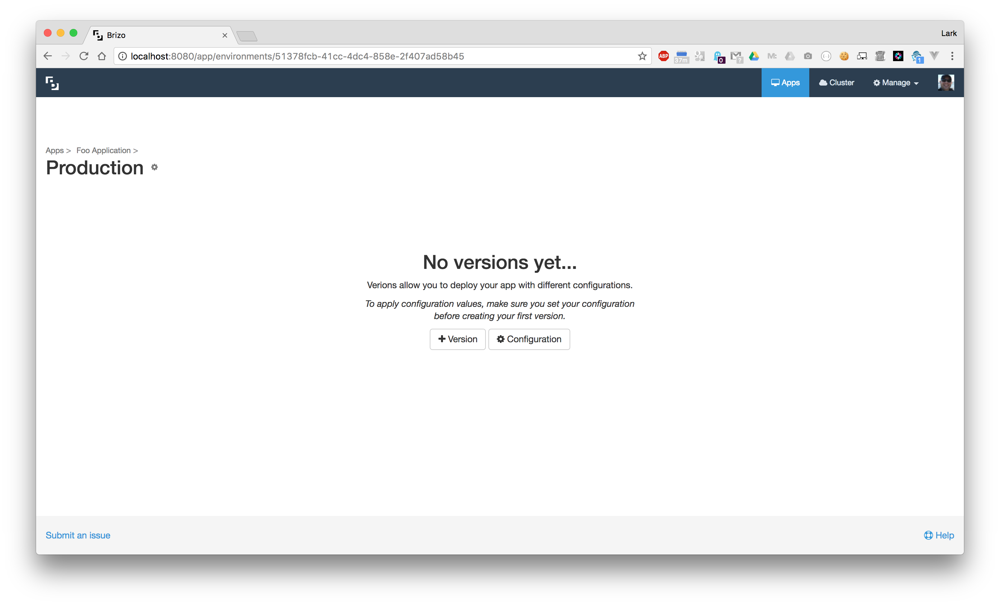
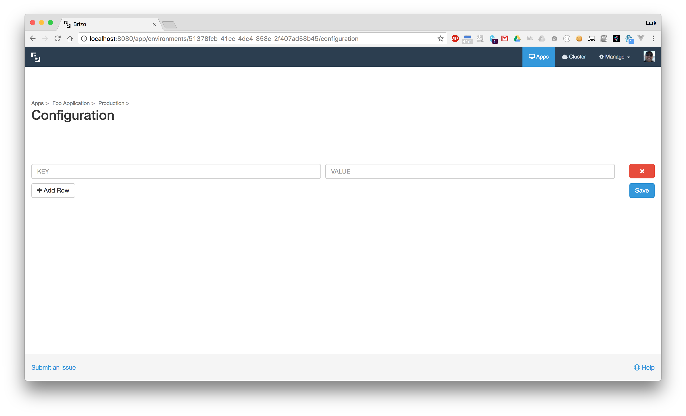
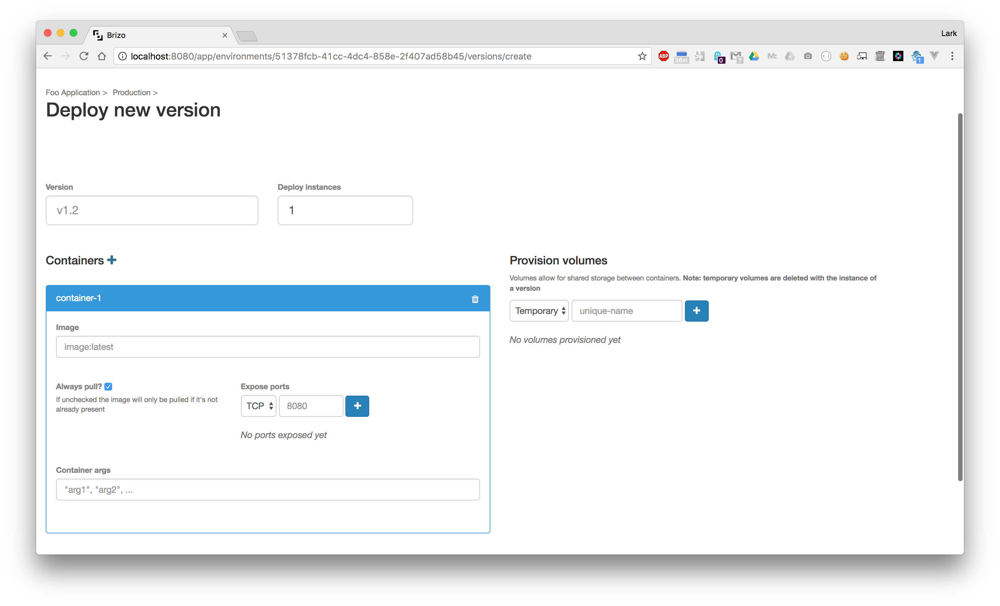
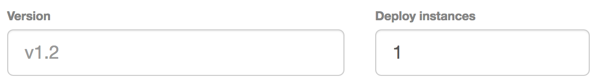
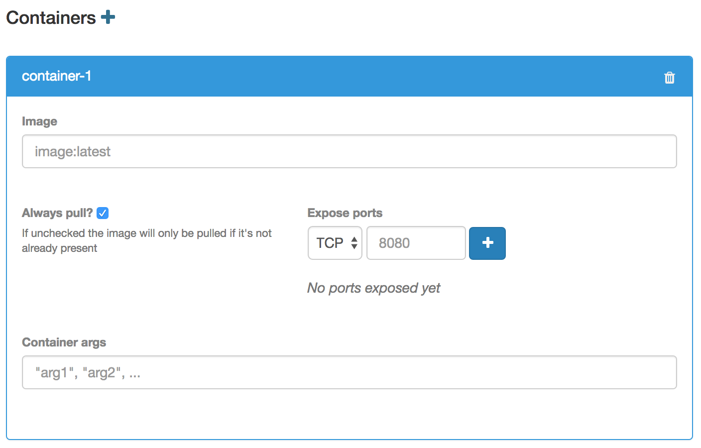
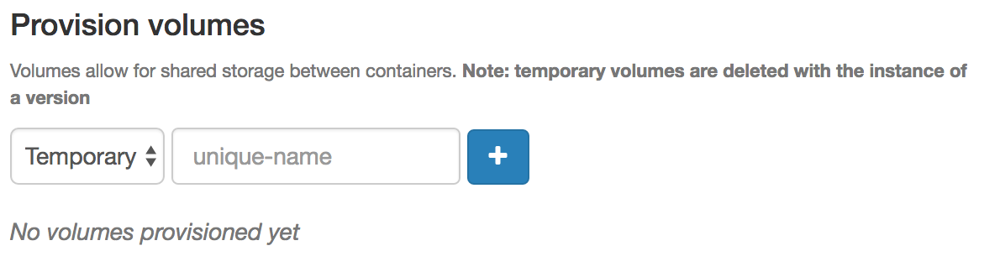
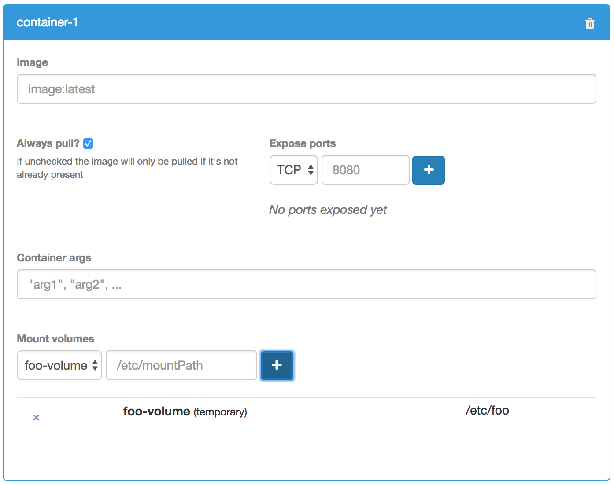
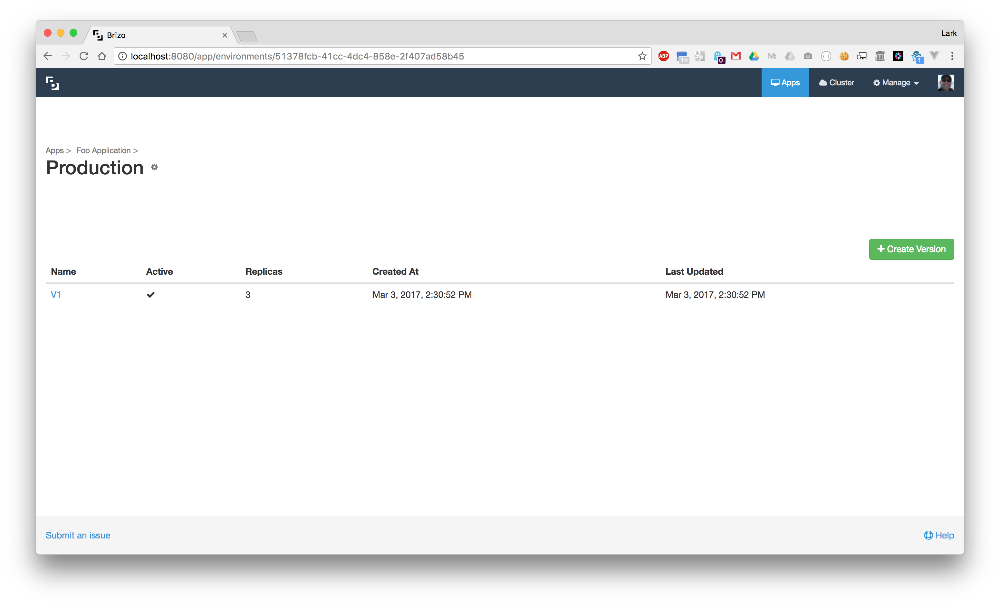

<div class="help-index">
  <div class="container-fluid">
    <div class="row">
      <div class="col-md-6 col-md-offset-3">
        <a [routerLink]="['/help']">&laquo; Back to Help</a>
        <h3>Versions</h3>
        <hr />
        <p>After you have an environment created for your application, you will want to create a version. A version is the actual deployment of your code to Kubernetes. Versions correspond to a Kubernetes <a href="https://kubernetes.io/docs/user-guide/deployments/" target="_blank">deployment</a>.</p>
        
        <p>There are two concepts to a Version as far as Brizo is concerned.</p>
        <p>The first concept is Configuration. A configuration are environment variables that are applied to each of the containers in your version.</p>
        
        <p><i>To add configuration values to your version you will need to create a configuration first before creating a version.</i></p>
        <br />
        <h4>Deploy a Version</h4>
        <p>To deploy a new version click on <b>+ New Version</b>. You should now see the Version create screen.</p>
        
        <p>This is where you will get into the internals of what defines your application. You will define a name for your version and how many replicas (how many pods) will be deployed. You will define how many containers, the images and ports these containers will use, and you can define volumes that will be used.</p>
        <br />
        <h4>Name and Replicas</h4>
        <p>First thing you need to do is to define a name for your version and define how many replicas are required for this version.</p>
        <p><i>Each version is required to have a unique name. If not, Brizo will complain.</i></p>
        
        <br />
        <h4>Creating Containers</h4>
        <p>After naming your version and defining how many replicas, you will then need to define the containers your version will need. For each container you define you are required to define an image that will be pulled when the container is created.</p>
        <p>If your container requires specific ports to be open you will need to add them for each of your containers. These ports will be opened on your container as well as the environment (service).</p>
        <p>You can also provide specific arguments your container might need for your application's needs.</p>
        
        <p><i>If you need more than one container, click the <b>+</b> next to the Containers heading</i></p>
        <br />
        <h4>Provisioning and Adding Volumes</h4>
        <p>To create a volume for your container you will first need to define the volume. This is simply done by going to the "Provision Volumes" section and giving the volume a name. Currently, only temporary volumes are allowed in Brizo.</p>
        
        <p>After your volume is provisioned it will display below the Provision Volume section.</p>
        <br />
        <h4>Attach Volumes to Containers</h4>
        <p>After you have provisioned a volume, a section will appear in the Container definition that will allow you to attach this new volume to any of your containers.</p>
        
        <br />
        <h4>Deploy</h4>
        <p>Once you configured your completed all the steps above you are ready to deploy your version.</p>
        <p>Click the "Deploy version" button and this will launch your version as a deployment in your Kubernetes cluster.</p>
        <p>After you successfully deploy a new version, you will be directed back to the environment details which will display the newly created version. This new version will be automatically set to the active version.</p>
        
      </div>
    </div>
  </div>
</div>